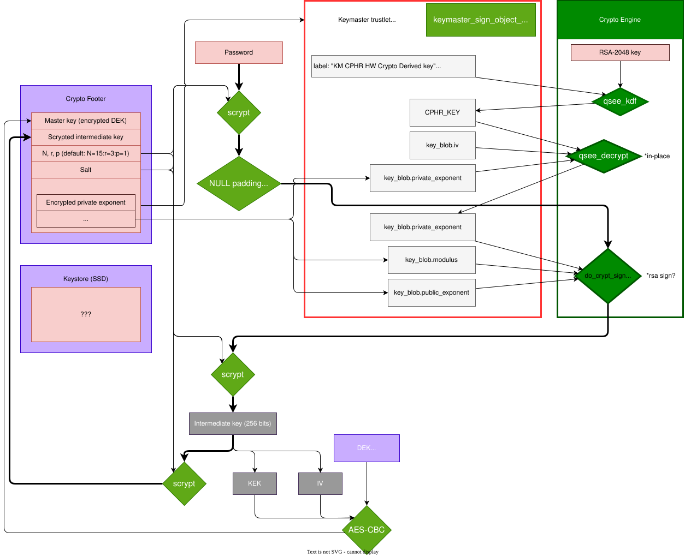
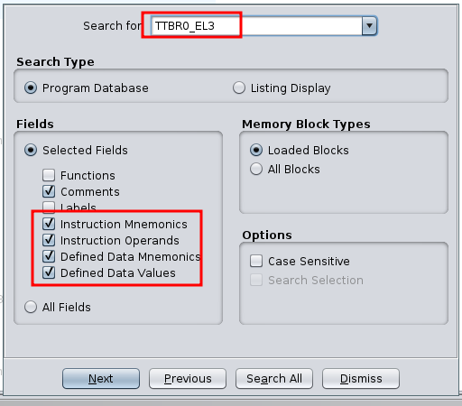
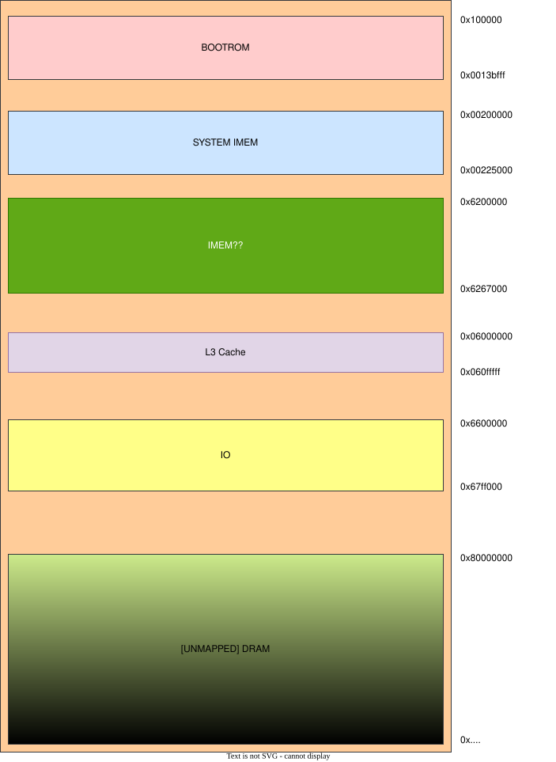
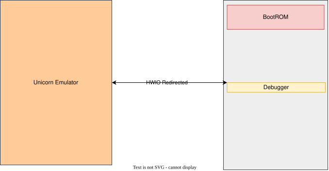
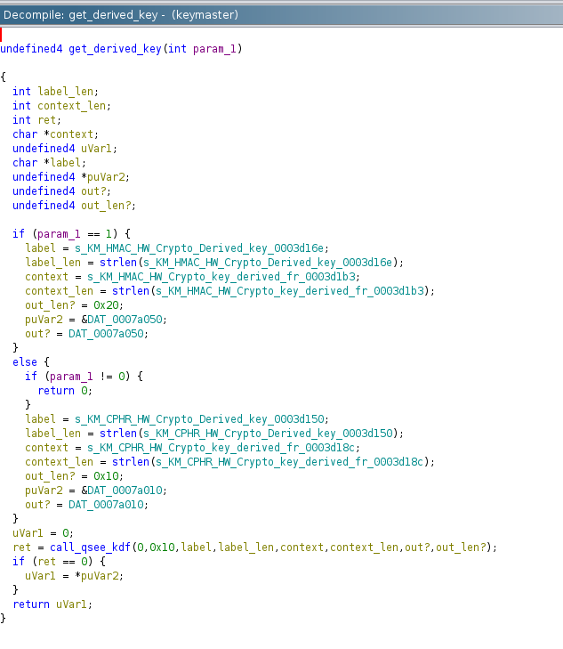

MSM8996
Documentation for the Qualcomm MSM8996 SoC


Current status
Unable to get the Crytpo Engine working. Request more hours from the Dutch Police or stop the research.
Next steps
Request better password list for target device and let it run in the background.
Implement the
Crypto Engineinitialization and execution in C, using Jeffrey’s reference code and execute it on the device. (~2 days work)Try to continue booting the XBL by loading and executing it using the Debugger. (~2-? days)
Fully reverse engineering the inner workings of the
Crypto Enginein order to get it working (? days)
Memory map
First make a full, detailed memory map of the current location of all the components. Locate where each memory region is and probe memory to see what is available.
Warning
Document the memory map!
Continue Booting
MMU
Let’s try to see if we can figure out how the MMU works, maybe we can map the PBL as r/w and edit it?
TTBR0_EL3
We use ghidra to search for an instruction that edits the TTBR0_EL3 register.

The result is a function that sets this register based on an argument, this argument is address 0x00206000, which in turn points to: 0x00200000, when dumping this we see:
dump = cd.memdump_region(0x00200000, 0x1000)
hexdump(dump)
┌─────────────────────────────────────────────────┬──────────────────┐
0x00000000 │ 03 20 20 00 00 00 00 00 03 30 20 00 00 00 00 00 │ . ......0 ..... │
0x00000010 │ 01 07 40 00 00 00 60 00 01 07 60 00 00 00 60 00 │ ..@...`...`...`. │
0x00000020 │ 01 07 80 00 00 00 60 00 01 07 a0 00 00 00 60 00 │ ......`.......`. │
0x00000030 │ 01 07 c0 00 00 00 60 00 01 07 e0 00 00 00 60 00 │ ......`.......`. │
0x00000040 │ 01 07 00 01 00 00 60 00 01 07 20 01 00 00 60 00 │ ......`... ...`. │
0x00000050 │ 01 07 40 01 00 00 60 00 01 07 60 01 00 00 60 00 │ ..@...`...`...`. │
0x00000060 │ 01 07 80 01 00 00 60 00 01 07 a0 01 00 00 60 00 │ ......`.......`. │
0x00000070 │ 01 07 c0 01 00 00 60 00 01 07 e0 01 00 00 60 00 │ ......`.......`. │
0x00000080 │ 01 07 00 02 00 00 60 00 01 07 20 02 00 00 60 00 │ ......`... ...`. │
0x00000090 │ 01 07 40 02 00 00 60 00 01 07 60 02 00 00 60 00 │ ..@...`...`...`. │
0x000000a0 │ 01 07 80 02 00 00 60 00 01 07 a0 02 00 00 60 00 │ ......`.......`. │
Judging by the structure of the pointers (8 bytes and the first entries contianing valid addresses), this is a pagetable. When parsing it we see the following:
dump = cd.memdump_region(MMU_PT_ADDR, 0x4000)
pagetable = PagetableARM64_el3(dump)
pagetable.parse_ptp()
pagetable.print_entries()
+---------------------------------------------------------------------------------+
|63 : 59|58:55|54 |53 |52 | 51 : 12 |11|10|9:8|7:6|5 |4:2 |1:0|--------------+
+---------------------------------------------------------------------------------+
| |RESER|UXN|PXN|CON| PFN |nG|AF|SH |AP |NS|Indx| | ADDRESS |
+---------------------------------------------------------------------------------+
| 00000 |0000 | 0 | 0 | 0 | 514 |0 |0 | 0 | 00 |0 |000 |11 | 0x202000 |
+---------------------------------------------------------------------------------+
| 00000 |0000 | 0 | 0 | 0 | 515 |1 |0 | 0 | 00 |0 |000 |11 | 0x203000 |
+---------------------------------------------------------------------------------+
Due to a lot of pages being mapped read-only, we cannot write to these pages or execute them.
MMU_PT_ADDR = 0x0020_1000
def eljakim_test(cd : "ConcreteDevice"):
# Parse pagetable
dump = cd.memdump_region(MMU_PT_ADDR, 0x4000)
pagetable = PagetableARM64_el3(dump)
pagetable.parse_ptp()
# pagetable.print_entries()
pagetable.remove_pxn_all_entries()
pagetable.make_all_pages_rw()
cd.memwrite_region(MMU_PT_ADDR, pagetable.entries_to_pagetabledump())
cd.write(b"FLSH")
The debugger is used to make the pages R/W. We can even modify the BootROM code now, but only because the code is cached. Upon clearing the cache the original PBL code is restored.
Patch PBL Test
To test if we can write to the PBL and execute the code, a patch was written to the PBL to set several registers (x0 - x3) and jump back to the debugger:
shellcode = f'''
MOV X0, #0x777
MOV X1, #0x777
MOV X2, #0x777
MOV X3, #0x777
'''
cd.memwrite_region(0x100000 + 8, cd.arch_dbg.ks.asm(shellcode, as_bytes=True)[0])
cd.memwrite_region(0x100000 + 8 + 0x10, cd.arch_dbg.sc.branch_absolute(0x6201000))
cd.jump_to(0x100000 + 8)
cd.arch_dbg.state.print_ctx()
[i]
X0 : 0x777 | X1 : 0x777 | X2 : 0x777 | X3 : 0x777 | X4 : 0x0 | X5 : 0x1 | X6 : 0x90 |
X7 : 0x13 | X8 : 0x100008 | X9 : 0x620155c | X10 : 0x2a | X11 : 0x0 | X12 : 0x0 | X13 : 0x7c5e81 |
X14 : 0xcccccccccccccccd | X15 : 0x6204000 | X16 : 0x0 | X17 : 0x6209a70 | X18 : 0x0 | X19 : 0x6201465 | X20 : 0x6201450 |
X21 : 0x6201468 | X22 : 0x4f | X23 : 0x100 | X24 : 0x20 | X25 : 0x100 | X26 : 0xffffff20 | X27 : 0x0 |
X28 : 0x98 | X29 : 0x6202ff0 | LR/X30 : 0x100020 | SP/X31 : 0x6202f80
Registers are changed so we can patch and execute PBL code.
Relocate debugger
We need to find a code cave that gives us room to place the debugger, preferably without it being overwritten all the time.
I made a memory map of the memory according to the pagetable:

Emulating Trustzone (HitM)
Warning
WIP, not a working solution. Use as incomplete reference.
In order to not have to reverse all the hardware setup and the full tzbsp_kdf function in Trustzone, we implemented a Hardware-in-the-Middle approach.
Trustzone is setup in Unicorn, giving us full control over it, but all HWIO calls are redirected to the device.
A simple overview of the setup looks like this:

In short, we emulate trustzone to do:
Initialize Trustzone
Get the Hardware derived key
This is possible because we have the debugger running and can forward the read and writes.
In order to do this, memory ranges are mapped and hooked in Unicorn.
# mmap
self.uc.mem_map(0x00640000, 0x00040000, UC_PROT_READ | UC_PROT_WRITE)
# Hook
self.uc.hook_add(UC_HOOK_MEM_READ | UC_HOOK_MEM_FETCH | UC_HOOK_MEM_WRITE, self.hook_hw_block, 8, 0x00640000, 0x00640000 + 0x00040000 - 1) # Crypto
Code for forwarding calls to hardware:
def hook_hw_block(self, handle, access, address, size, value, user_data):
if self.cd:
if access == UC_MEM_READ:
info(f"Device reading from address: {hex(address)}")
if user_data is not None:
if size < user_data:
to_read_from = address - (address % user_data)
if address == to_read_from:
self.uc.mem_write(address, cd.memdump_region(to_read_from, user_data)[:4])
else:
self.uc.mem_write(address, cd.memdump_region(to_read_from, user_data)[4:])
else:
self.uc.mem_write(address, self.cd.memdump_region(address, size))
if access == UC_MEM_WRITE:
info(f"Writing to address: {hex(address)} | {hex(value)}")
if user_data is not None:
data = p32(value)
cd.memwrite_region(address, data)
self.uc.mem_write(address, data)
return
assert size == 4
self.cd.memwrite_region(address, p32(value))
self.uc.mem_write(address, p32(value))
self.cd.write(b"FLSH")
Note
Most hardware pheriperals work by reading/writing 4 bytes, but due to instability on the device (crashes, unexpected behaviour) the size for R/W to the device was increased to 8 for most hardware calls.
We start by emulating Trustzone from it’s entrypoint and add a hook to ignore invalid instruction errors, due to unsupported MSR and MRS calls. The first issue we encounter is that a structure is copied in trustzone, from a user provided address. This is 0, since we have not properly booted the full device. We skip the full initialization of trustzone and try to just emulate the required functions.
On first run of the exploit, most hardware is also initialized(tzbsp_configure_hw), to hopefully create a correct state.
BAM
The Buss Access Manager(BAM) needs to be initialized, the function tzbsp_bam_init is used to do this.
The function returns as expected and reading from the structures and variables required for the CE by the BAM we get expected results, like the RX and TX pipes with valid data.
Keymaster
We want to emulate the CeMLAesEncryptUsingHWKey.
A qsee.elf file with symbols was found, which was used to add symbols to our tz.elf file.
Note
A bug was found in ghidra in the fidb function. Fix was made and a pull request.
get_derived_key
Function that is called in keymaster to get the derived key:

Variable |
Content |
|---|---|
key |
Null |
key_len |
0x10 |
label |
“KM CPHR HW Crypto Derived key” |
label_len |
29 |
context |
“KM CPHR HW Crypto key derived from SHK” |
context_len |
38 |
Implement CE
Using this repository we have some information about the HWIO addresses of the chip. (trustzone_images/core/api/systemdrivers/hwio/msm8996/phys/msmhwiobase.h)
ce.py uses the ConreteDevice from the debugger to communicate with the target device and acts as the Crypto Engine in order to set it up and perform a Crypto Operation.
Warning
WIP, does not work. Needs to be rechecked.
Script can be used with the Trustzone Emulator, to let Trustzone setup the BAM and Crypto Engine since this script does not setup the Clocks.
Emulate BootROM (HitM)
Same as the Trustzone Emulator, but for emulating the BootROM, runs until setting up the clock for the BootROM. Needs work. Current setup runs until setting up the Flash storage but enters the error handler.